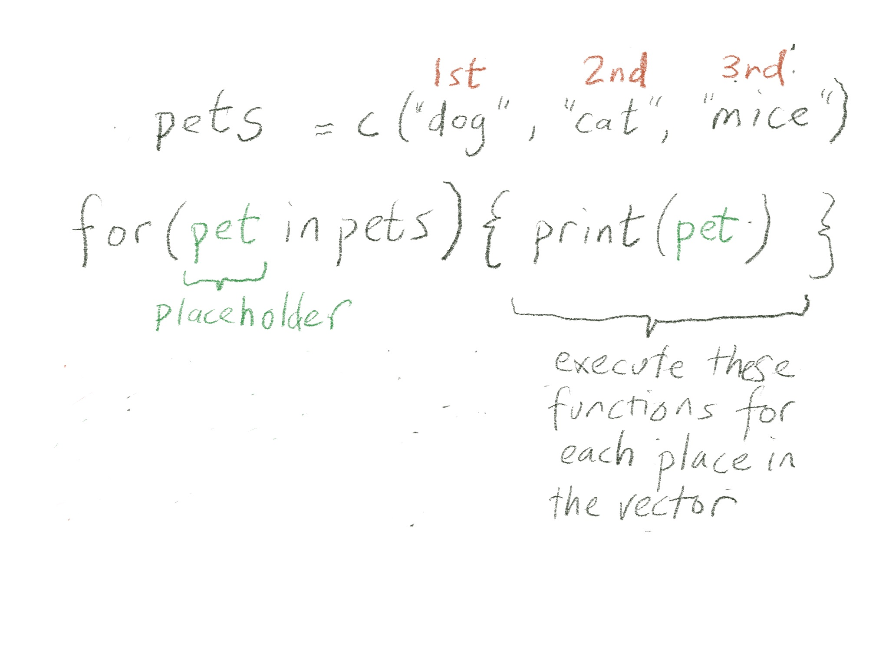
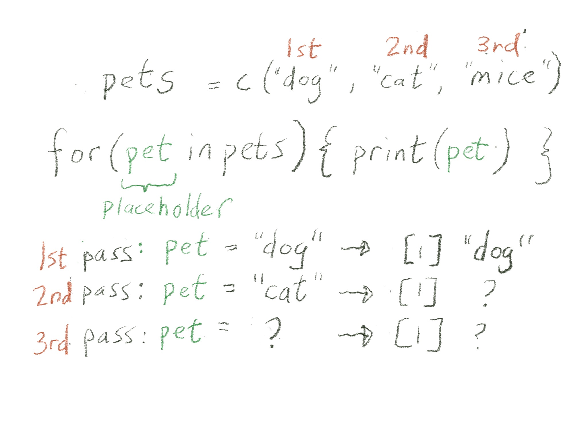
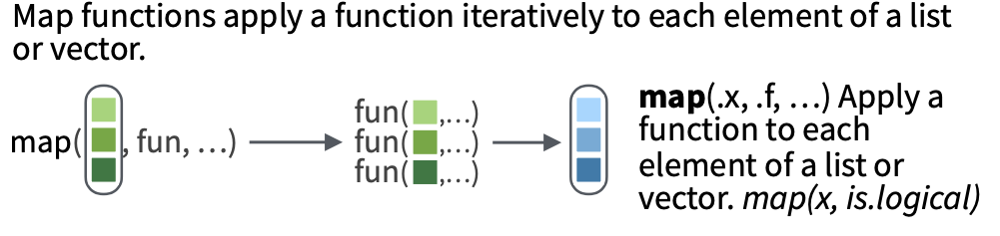

9: Iteration
BSTA 526: R Programming for Health Data Science
OHSU-PSU School of Public Health
2026-03-05
1 Welcome to R Programming: Part 9!
Today we will learn about iterating in R.
Before you get started:
Remember to save this notebook under a new name, such as
part_09_b526_YOURNAME.qmd.
- Load the packages in the setup code chunk
1.1 Learning Objectives
- Introduce statistical modeling and learn how to fit a simple linear regression model and run a t-test in R
- Learn how to use
broomfunctions to tidy up statistical model output - Learn about
forloops - Understand how to apply a function to a list
- Learn how to iterate over a list using
map()functions from thepurrrpackage
2 Brief Introduction to Statistics in R
- A brief introduction on statistical models in R and how to extract output in a “tidy” way
- We will be using statistical models as iteration examples and applying
purrr::map()
2.1 This is just a brief modeling overview!
- This is not meant to be a comprehensive course in statistics!!
- Just showing some basic techniques.
- If you want to learn more about statistical modeling, here are some resources:
- Modern Dive / Statistical Inference via Data Science by Chester Ismay and Albert Y Kim is a nice place to start: https://moderndive.com/v2/
- Danielle Navarro’s Learning Statistics with R is excellent and talks much more about statistics: https://learningstatisticswithr.com/
If you’ve worked with statistical models and tests in R, you know they have an…eclectic way of inputting data and outputting results. The inputs and outputs are not standardized or consistent.
2.2 Linear Regression
- A linear regression model uses least squares estimation to fit the closest linear line to the model (very simplistic explanation).
- The linear regression formula is often written as:
\[Y = \beta_0 + \beta_1 \cdot X + error\]
- \(Y\) is a numeric continuous measurement (the “outcome” or “dependent variable”)
- \(X\) is a covariate (or “predictor” or “independent variable”).
- \(X\) can be numeric or categorical (in R, this can be numeric, factor, character, or boolean).
- \(\beta_0\) denotes the intercept of the line
- \(\beta_1\) denotes the slope of the line, or our coefficient.
- The error is assumed to normally distributed (Gaussian) with mean 0.
2.3 R formula for linear regression
- In R, this translates to using a formula argument in the
lm()function of the formatoutcome ~ predictor(the intercept is implied):
Y ~ X
Or if we have multiple predictors/covariates (independent variables), perhaps:
Y ~ A + B + C
- The function
lm()is in thestatspackage, which is automatically loaded with every R session.- So you don’t need to call
library(stats)orp_load(stats)to use it.
- So you don’t need to call
- Use the Palmer penguins data set
- Outcome:
body_mass_g(continuous) - Independent variables:
speciesandsex
outcome ~ independent variables
body_mass_g ~ species + sex
- Categorical independent variables
- R converts categorical predictors, such as species and sex, into categories in the model
- The estimates are interpreted as the expected mean differences in body mass compared to the reference group.
- The reference group is by default the first alphabetical category.
- If you wish to change the reference group, you need to use factors.
- If you have not taken BSTA 512/612, or a similar linear regression class, you can learn more about linear regression section in Learning Statistics with R!.
Always read the documentation! ?lm
- This prints out the formula and the coefficient estimates, nothing else
Call:
lm(formula = body_mass_g ~ species + sex, data = penguins)
Coefficients:
(Intercept) speciesChinstrap speciesGentoo sexmale
3372.39 26.92 1377.86 667.56 - This prints out the coefficient estimates as well as statistics and p-values
Call:
lm(formula = body_mass_g ~ species + sex, data = penguins)
Residuals:
Min 1Q Median 3Q Max
-816.87 -217.80 -16.87 227.61 882.20
Coefficients:
Estimate Std. Error t value Pr(>|t|)
(Intercept) 3372.39 31.43 107.308 <2e-16 ***
speciesChinstrap 26.92 46.48 0.579 0.563
speciesGentoo 1377.86 39.10 35.236 <2e-16 ***
sexmale 667.56 34.70 19.236 <2e-16 ***
---
Signif. codes: 0 '***' 0.001 '**' 0.01 '*' 0.05 '.' 0.1 ' ' 1
Residual standard error: 316.6 on 329 degrees of freedom
(11 observations deleted due to missingness)
Multiple R-squared: 0.8468, Adjusted R-squared: 0.8454
F-statistic: 606.1 on 3 and 329 DF, p-value: < 2.2e-16- What kind of object is fit_lm?
- Look at diagnostic plots
- What’s in fit_lm?
List of 14
$ coefficients : Named num [1:4] 3372.4 26.9 1377.9 667.6
..- attr(*, "names")= chr [1:4] "(Intercept)" "speciesChinstrap" "speciesGentoo" "sexmale"
$ residuals : Named num [1:333] -289.9 427.6 -122.4 77.6 -389.9 ...
..- attr(*, "names")= chr [1:333] "1" "2" "3" "5" ...
$ effects : Named num [1:333] -76772 -4381 11225 6090 -376 ...
..- attr(*, "names")= chr [1:333] "(Intercept)" "speciesChinstrap" "speciesGentoo" "sexmale" ...
$ rank : int 4
$ fitted.values: Named num [1:333] 4040 3372 3372 3372 4040 ...
..- attr(*, "names")= chr [1:333] "1" "2" "3" "5" ...
$ assign : int [1:4] 0 1 1 2
$ qr :List of 5
..$ qr : num [1:333, 1:4] -18.2483 0.0548 0.0548 0.0548 0.0548 ...
.. ..- attr(*, "dimnames")=List of 2
.. .. ..$ : chr [1:333] "1" "2" "3" "5" ...
.. .. ..$ : chr [1:4] "(Intercept)" "speciesChinstrap" "speciesGentoo" "sexmale"
.. ..- attr(*, "assign")= int [1:4] 0 1 1 2
.. ..- attr(*, "contrasts")=List of 2
.. .. ..$ species: chr "contr.treatment"
.. .. ..$ sex : chr "contr.treatment"
..$ qraux: num [1:4] 1.05 1.03 1.05 1.05
..$ pivot: int [1:4] 1 2 3 4
..$ tol : num 1e-07
..$ rank : int 4
..- attr(*, "class")= chr "qr"
$ df.residual : int 329
$ na.action : 'omit' Named int [1:11] 4 9 10 11 12 48 179 219 257 269 ...
..- attr(*, "names")= chr [1:11] "4" "9" "10" "11" ...
$ contrasts :List of 2
..$ species: chr "contr.treatment"
..$ sex : chr "contr.treatment"
$ xlevels :List of 2
..$ species: chr [1:3] "Adelie" "Chinstrap" "Gentoo"
..$ sex : chr [1:2] "female" "male"
$ call : language lm(formula = body_mass_g ~ species + sex, data = penguins)
$ terms :Classes 'terms', 'formula' language body_mass_g ~ species + sex
.. ..- attr(*, "variables")= language list(body_mass_g, species, sex)
.. ..- attr(*, "factors")= int [1:3, 1:2] 0 1 0 0 0 1
.. .. ..- attr(*, "dimnames")=List of 2
.. .. .. ..$ : chr [1:3] "body_mass_g" "species" "sex"
.. .. .. ..$ : chr [1:2] "species" "sex"
.. ..- attr(*, "term.labels")= chr [1:2] "species" "sex"
.. ..- attr(*, "order")= int [1:2] 1 1
.. ..- attr(*, "intercept")= int 1
.. ..- attr(*, "response")= int 1
.. ..- attr(*, ".Environment")=<environment: R_GlobalEnv>
.. ..- attr(*, "predvars")= language list(body_mass_g, species, sex)
.. ..- attr(*, "dataClasses")= Named chr [1:3] "numeric" "factor" "factor"
.. .. ..- attr(*, "names")= chr [1:3] "body_mass_g" "species" "sex"
$ model :'data.frame': 333 obs. of 3 variables:
..$ body_mass_g: int [1:333] 3750 3800 3250 3450 3650 3625 4675 3200 3800 4400 ...
..$ species : Factor w/ 3 levels "Adelie","Chinstrap",..: 1 1 1 1 1 1 1 1 1 1 ...
..$ sex : Factor w/ 2 levels "female","male": 2 1 1 1 2 1 2 1 2 2 ...
..- attr(*, "terms")=Classes 'terms', 'formula' language body_mass_g ~ species + sex
.. .. ..- attr(*, "variables")= language list(body_mass_g, species, sex)
.. .. ..- attr(*, "factors")= int [1:3, 1:2] 0 1 0 0 0 1
.. .. .. ..- attr(*, "dimnames")=List of 2
.. .. .. .. ..$ : chr [1:3] "body_mass_g" "species" "sex"
.. .. .. .. ..$ : chr [1:2] "species" "sex"
.. .. ..- attr(*, "term.labels")= chr [1:2] "species" "sex"
.. .. ..- attr(*, "order")= int [1:2] 1 1
.. .. ..- attr(*, "intercept")= int 1
.. .. ..- attr(*, "response")= int 1
.. .. ..- attr(*, ".Environment")=<environment: R_GlobalEnv>
.. .. ..- attr(*, "predvars")= language list(body_mass_g, species, sex)
.. .. ..- attr(*, "dataClasses")= Named chr [1:3] "numeric" "factor" "factor"
.. .. .. ..- attr(*, "names")= chr [1:3] "body_mass_g" "species" "sex"
..- attr(*, "na.action")= 'omit' Named int [1:11] 4 9 10 11 12 48 179 219 257 269 ...
.. ..- attr(*, "names")= chr [1:11] "4" "9" "10" "11" ...
- attr(*, "class")= chr "lm"- Extract coefficients from a list
- Remember
[["coefficients]]is equivalent to$coefficientshere.
- Remember
(Intercept) speciesChinstrap speciesGentoo sexmale
3372.38681 26.92385 1377.85803 667.55515 - Can use pluck to go deeper in the index
2.4 Table of model estimates and p-values
- Goal: Create a table with model estimates and p-values
- Add confidence intervals?
coef(summary(fit_lm))andconfint(fit_lm)) can be used- … but they are a bit of work and
- not standardized across all the statistical methods/models
- (also, confusing, why do we need to use
coefon the summary andconfinton the original model? Who knows…)
Estimate Std. Error t value Pr(>|t|)
(Intercept) 3372.38681 31.42724 107.3077587 4.341117e-258
speciesChinstrap 26.92385 46.48341 0.5792142 5.628410e-01
speciesGentoo 1377.85803 39.10409 35.2356475 1.051670e-113
sexmale 667.55515 34.70397 19.2356975 8.729411e-56 2.5 % 97.5 %
(Intercept) 3310.56312 3434.2105
speciesChinstrap -64.51835 118.3661
speciesGentoo 1300.93243 1454.7836
sexmale 599.28547 735.8248Enter broom!
2.5 broom for tidy()-ing statistical output
- The
broompackage is truly a life changing package for statisticians. - 3 main functions in
broom:tidy()- most of the output you want, including coefficients and p-valuesglance()- additional model measures, including R-squared, log likelihood, and AIC/BICaugment()- make predictions with your model using new data
- We will mostly use
tidy()andglance()for right now.
- Argument: a (regression) model object
- many types of models or even simple tests work, such as t-test, etc.
- Output: a cleaned up tibble of model results
# A tibble: 4 × 5
term estimate std.error statistic p.value
<chr> <dbl> <dbl> <dbl> <dbl>
1 (Intercept) 3372. 31.4 107. 4.34e-258
2 speciesChinstrap 26.9 46.5 0.579 5.63e- 1
3 speciesGentoo 1378. 39.1 35.2 1.05e-113
4 sexmale 668. 34.7 19.2 8.73e- 56- We can ask for confidence intervals:
# A tibble: 4 × 7
term estimate std.error statistic p.value conf.low conf.high
<chr> <dbl> <dbl> <dbl> <dbl> <dbl> <dbl>
1 (Intercept) 3372. 31.4 107. 4.34e-258 3311. 3434.
2 speciesChinstrap 26.9 46.5 0.579 5.63e- 1 -64.5 118.
3 speciesGentoo 1378. 39.1 35.2 1.05e-113 1301. 1455.
4 sexmale 668. 34.7 19.2 8.73e- 56 599. 736.- We can save this tibble and make it prettier with tidyverse functions and gt:
Format p-value nicely with scales::label_pvalue():
# an example of using scales::label_pvalue to format p-value nicely
scales::label_pvalue(accuracy = 0.001)(0.2354464)[1] "0.235"[1] "<0.001"# apply to lm output:
lm_tidy_output %>%
select(term, estimate, conf.low, conf.high, p.value) %>%
mutate(
# use the scales package to format the p-value nicely
p.value = scales::label_pvalue(accuracy = 0.001)(p.value),
# round numeric columns to 1 digit
across(.cols = where(is.numeric),
.fns = ~round(.x, digits = 1))
) %>%
# use gt to make nice html table
gt()| term | estimate | conf.low | conf.high | p.value |
|---|---|---|---|---|
| (Intercept) | 3372.4 | 3310.6 | 3434.2 | <0.001 |
| speciesChinstrap | 26.9 | -64.5 | 118.4 | 0.563 |
| speciesGentoo | 1377.9 | 1300.9 | 1454.8 | <0.001 |
| sexmale | 667.6 | 599.3 | 735.8 | <0.001 |
2.6 gtsummary package for statistical tables
- The
gtsummarypackage has several useful functions for creating nicely summarized output. - Here’s the regression table:
| Characteristic | Beta | 95% CI1 | p-value |
|---|---|---|---|
| species | |||
| Adelie | — | — | |
| Chinstrap | 27 | -65, 118 | 0.6 |
| Gentoo | 1,378 | 1,301, 1,455 | <0.001 |
| sex | |||
| female | — | — | |
| male | 668 | 599, 736 | <0.001 |
| 1 CI = Confidence Interval | |||
- If you prefer the global p-value for a multi-category covariate such as species:
| Characteristic | Beta | 95% CI1 | p-value |
|---|---|---|---|
| species | <0.001 | ||
| Adelie | — | — | |
| Chinstrap | 27 | -65, 118 | 0.6 |
| Gentoo | 1,378 | 1,301, 1,455 | <0.001 |
| sex | <0.001 | ||
| female | — | — | |
| male | 668 | 599, 736 | <0.001 |
| 1 CI = Confidence Interval | |||
- There are many ways to use and customize these tables
- that we will talk about in part 10.
2.7 t-test (independent samples)
- Briefly, a (independent samples) t-test is used to test whether the means between two groups are different.
- The measurements must be numeric.
- The null hypothesis for a t-test is that the two means are equal, and the alternative hypothesis is that they are not equal.
- See Day 11 materials from BSTA 511 for more information.
- The t-test formula in R is similar to a linear regression
- the continuous numerical measurement is on the left side of the
~and - on the right side is the grouping variable.
- the continuous numerical measurement is on the left side of the
- Look at the
?t.testdocumentation- to determine whether this is a two-sided t-test, and
- whether it assumes the variances in each group are equal.
- How would you perform a paired t-test?
Welch Two Sample t-test
data: body_mass_g by sex
t = -8.5545, df = 323.9, p-value = 4.794e-16
alternative hypothesis: true difference in means between group female and group male is not equal to 0
95 percent confidence interval:
-840.5783 -526.2453
sample estimates:
mean in group female mean in group male
3862.273 4545.685 - The
t.test()function can also be run using two vectors as inputs instead of a formula (y~x). - Code below is for the same test as above,
- creating two vectors of numeric data representing the values from each group (in this case, within each sex).
# create first vector of values for females
female_body_mass_g <- penguins %>%
filter(sex=="female") %>%
# the pull function pulls out the column as a vector (not a data frame/tibble)
pull(body_mass_g)
# create second vector of values for males
male_body_mass_g <- penguins %>%
filter(sex=="male") %>%
# the pull function pulls out the column as a vector (not a data frame/tibble)
pull(body_mass_g)
# run t-test using the two vectors:
t.test(female_body_mass_g, male_body_mass_g)
Welch Two Sample t-test
data: female_body_mass_g and male_body_mass_g
t = -8.5545, df = 323.9, p-value = 4.794e-16
alternative hypothesis: true difference in means is not equal to 0
95 percent confidence interval:
-840.5783 -526.2453
sample estimates:
mean of x mean of y
3862.273 4545.685 # run a t-test, save the output
penguin_t <- t.test(body_mass_g ~ sex, data = penguins)
# t-test object is a complicated list
str(penguin_t)List of 10
$ statistic : Named num -8.55
..- attr(*, "names")= chr "t"
$ parameter : Named num 324
..- attr(*, "names")= chr "df"
$ p.value : num 4.79e-16
$ conf.int : num [1:2] -841 -526
..- attr(*, "conf.level")= num 0.95
$ estimate : Named num [1:2] 3862 4546
..- attr(*, "names")= chr [1:2] "mean in group female" "mean in group male"
$ null.value : Named num 0
..- attr(*, "names")= chr "difference in means between group female and group male"
$ stderr : num 79.9
$ alternative: chr "two.sided"
$ method : chr "Welch Two Sample t-test"
$ data.name : chr "body_mass_g by sex"
- attr(*, "class")= chr "htest"broom::tidy()pulls out all the relevant info, even the type of test!
| estimate | estimate1 | estimate2 | statistic | p.value | parameter | conf.low | conf.high | method | alternative |
|---|---|---|---|---|---|---|---|---|---|
| -683.4118 | 3862.273 | 4545.685 | -8.554537 | 4.793891e-16 | 323.8959 | -840.5783 | -526.2453 | Welch Two Sample t-test | two.sided |
- Note that for the t-test,
glanceandtidydo the same thing because there’s no model to summarize:
| estimate | estimate1 | estimate2 | statistic | p.value | parameter | conf.low | conf.high | method | alternative |
|---|---|---|---|---|---|---|---|---|---|
| -683.4118 | 3862.273 | 4545.685 | -8.554537 | 4.793891e-16 | 323.8959 | -840.5783 | -526.2453 | Welch Two Sample t-test | two.sided |
estimate1vs.estimate2: which mean is which?
- They will be listed in alphabetical order:
# A tibble: 3 × 2
sex `mean(body_mass_g)`
<fct> <dbl>
1 female 3862.
2 male 4546.
3 <NA> NA - Stay tuned for more statistics and models next class.
- The purpose of this brief intro was to get started with doing stats in R so we can see how to use models with
purrr.
- The purpose of this brief intro was to get started with doing stats in R so we can see how to use models with
2.8 Challenge 1
- Run a two sample t-test comparing cigarettes per day by gender variable in the
lusc_data.Show the p-value using a function frombroom. - Fit a linear regression with cigarettes per day as the outcome and gender as the independent variable. Show the coefficients and p-value and confidence intervals using
broom.
3 Iteration
- From the Iteration chapter in R4DS (part of this week’s readings)
- Iteration is “repeatedly performing the same action on different objects.”
Iteration in R generally tends to look rather different from other programming languages because so much of it is implicit and we get it for free. For example, if you want to double a numeric vector x in R, you can just write 2 * x. In most other languages, you’d need to explicitly double each element of x using some sort of for loop.
- Some examples of iteration that we’ve already seen:
- vectorized functions i.e.
2*xortoupper(c("a","b","cdef")) across()withmutateorsummarizeperforming calculations across multiple columns- using custom functions within
across()
- vectorized functions i.e.
3.1 The for() loop way - first show iteration explicitly
- The
for()loop is a fundamental concept in computer programming.- This is the first step in automating over a long list (or vector!) of things.
- The idea is:
- If we do something once with a function,
- we can do it multiple times on different elements in a vector with that function.
- When we run the same function on different elements of a dataset, it is known as iteration.
- If we do something once with a function,
“In computer science a for-loop or for loop is a control flow statement for specifying iteration. Specifically, a for loop functions by running a section of code repeatedly until a certain condition has been satisfied.”
- In our case, the condition is usually that
- we’ve reached the end of the vector or list that we are indexing over.
- In the help documentation,
?fordefinition is:for(var in seq) {expr}
- Below we iterate across the vector
1:10. - The curly brackets
{}- contain functions/code block that you want to apply to each value in the vector, or to each “step”.
- In this case, we’re just printing out the values.
[1] 1
[1] 2
[1] 3
[1] 4
[1] 5
[1] 6
[1] 7
[1] 8
[1] 9
[1] 10- Slightly more complicated
- Note that you don’t have to use the word
indexfor the index!
- Note that you don’t have to use the word
# for each index in 1 to 10, do the thing inside {}
for(i in 1:10) { # using i as the index
print(i^2)
}[1] 1
[1] 4
[1] 9
[1] 16
[1] 25
[1] 36
[1] 49
[1] 64
[1] 81
[1] 100- We can do many things inside the brackets:
# for each index in 1 to 10, do the thing inside {}
for(numb in 1:10) { # using numb as the index
out <- numb - 1
print(numb)
print(out)
print(numb + out)
}[1] 1
[1] 0
[1] 1
[1] 2
[1] 1
[1] 3
[1] 3
[1] 2
[1] 5
[1] 4
[1] 3
[1] 7
[1] 5
[1] 4
[1] 9
[1] 6
[1] 5
[1] 11
[1] 7
[1] 6
[1] 13
[1] 8
[1] 7
[1] 15
[1] 9
[1] 8
[1] 17
[1] 10
[1] 9
[1] 19- The
indexis a placeholder. - It changes value each time we go through the loop (each iteration)
- It’s a way to refer to the element of the list that time around.
- It is not a variable that is meant to be used outside of the for loop.
- However, it is saved as an object (an aside: this is actually handy if your for loop exits on an error!):
- You also don’t need to use the index at all in your bracket code:
# for each index in 1 to 10, do the thing inside {}
for(index in 1:10) {
print(rnorm(n = 2)) # repeat the same thing 10 times
}[1] -0.5390307 -0.5743830
[1] -0.1927068 0.7310321
[1] -0.1725978 -1.5598219
[1] -1.2491829 0.8486965
[1] 2.4256132 0.2939203
[1] -0.74680967 -0.06463632
[1] -0.8560092 -0.8551662
[1] -0.2321517 0.6977850
[1] -1.315405 -1.118992
[1] 0.03040693 -1.26680178# for each index in the vector of pets, do the thing inside {}
pets <- c("dog", "cat", "mice")
for(index in pets) {
print(index)
}[1] "dog"
[1] "cat"
[1] "mice"- We can change the name of the index:
- A visual explanation (via Ted Laderas)


3.2 Saving for() loop output
- What does this
for()loop do?
[1] "meike's dog"
[1] "meike's cat"
[1] "meike's mice"- Note that the last iteration of
mypetis also saved as an object outside of the loop (into the global environment):
- But how do we capture all of the output the
for()loop creates?- We need to save it explicitly as a vector or list.
- Save all of the output the
for()loop creates as a vector
# make an empty vector (initialize)
all_my_pets <- c()
for(pet in pets){
mypet <- paste("meike's", pet)
# add the new variable mypet to the end of the vector all_my_pets
all_my_pets <- c(all_my_pets, mypet)
}
all_my_pets[1] "meike's dog" "meike's cat" "meike's mice"What happens when you run the
for()loop multiple times without initializingall_my_pets?We know
all_my_petsis a vector.- What does it contain?
- What is its length?
3.3 Challenge 2
- The toy example below has vectors for
- miles per gallon readings for different cars and
- corresponding number of miles driven per day.
- The
for()loop calculates the number of gallons (ng) used by each car.
- Adapt the code below to save the output as a vector of number of gallons driven for each car.
- Using the vector created in part 1, calculate the total number of gallons used.
cars_mpg <- c(20, 30, 44.2, 10)
cars_miles <- c(10, 1, 50, 10)
# modify the for loop to save output as a vector:
for(index in seq_along(cars_mpg)) {
ng <- cars_miles[index] / cars_mpg[index]
print(ng)
}[1] 0.5
[1] 0.03333333
[1] 1.131222
[1] 1How many total gallons of gas did the cars use?
3.4 for() loops with lists
We can also iterate for() loops over lists.
- Print the length of each list item
- Print the first element of each list
3.5 (Bonus content) Iteration over the length of the vector or list
- It’s also common to index over the numeric vector from 1 to the length of the list or vector:
[1] "dog" "cat" "mice"[1] "DOG"
[1] "CAT"
[1] "MICE"[1] 1
[1] "Morris" "Julia"
[1] 2
[1] "Spiny"
[1] 3
[1] "Rover" "Spot" "Kitty"
[1] 4
[1] 10 7for(index in 1:length(my_list)) {
myelement <- my_list[[index]]
gg <- glue("The length of element {index} is: {length(myelement)}")
print(gg)
}The length of element 1 is: 2
The length of element 2 is: 1
The length of element 3 is: 3
The length of element 4 is: 24 purrr: no need for for loops 🥳

4.1 Motivation for purrr
for()loops can indeed be useful, but they have their pros and cons- (adapted from Kelly Bodwin’s lecture on iteration)
- Pros:
- Classic programming approach, easy to understand since each step is written out in order of operation (easier to teach, first!)
- Easy to adapt
- Somewhat easy to debug
- Cons:
- Can become complex quickly, and therefore messy to read
- Require creating empty vectors and/or appending output in somewhat clunky way
- Don’t fit “nicely” inside other functions or pipelines
4.2 purrr::map()
Enter the purrr package and map().
purrr::map()lets us apply a function to each element of a list.- It will always return a list with the number of elements that is the same as the list we input it with.
- Each slot of the returned list will contain the output of the functions applied to each element of the input list.

- The way to read a
map()statement is:
map(.x = LIST_OBJECT, .f = FUNCTION_TO_APPLY)
- Let’s make a function to return the first element of the input vector:
- We can apply this function to each element of a list, if the list contains vectors.
- This is usually easiest if the list is homogeneous,
- but this specific function can work for heterogeneous lists containing different kinds of vectors as well.
- The
forloop way is similar to theforloop where we printed the first element of the list on a previous slide:
# create my list
my_list <- list(cat_names = c("Morris", "Julia"),
hedgehog_names = "Spiny",
dog_names = c("Rover", "Spot", "Kitty"),
cat_ages = c(10,7))
# apply get_first_element to each element of my_list and save the output:
# create empty list
list_output <- list()
# for loop along the length of my list (in this case, 4)
for(index in 1:length(my_list)) {
# print out the index just so we can see what index is
print(index)
# in the index'th slot, put in the first element of this list
list_output[[index]] <- get_first_element(my_list[[index]])
}[1] 1
[1] 2
[1] 3
[1] 4[[1]]
[1] "Morris"
[[2]]
[1] "Spiny"
[[3]]
[1] "Rover"
[[4]]
[1] 10- That was….not simple.
- But
purrr::map()gives us a much simpler way!
- First let’s think about what the
forloop was doing,- with a more straightforward approach,
- but one that does not scale well:
# apply the function directly to each list element one by one
list_output_by_hand <-
list(
get_first_element(my_list[[1]]),
get_first_element(my_list[[2]]),
get_first_element(my_list[[3]]),
get_first_element(my_list[[4]])
)
list_output_by_hand[[1]]
[1] "Morris"
[[2]]
[1] "Spiny"
[[3]]
[1] "Rover"
[[4]]
[1] 10- Notice how we were applying the function to each element of the list,
- one at a time, until we ran out of list elements?
purrr::map()does this automatically, without writing out the function 4 (or many more) times.
- The function
map()usually takes two inputs:- the list to process
- the function to process the list items with
map(.x = LIST_OBJECT, .f = FUNCTION_TO_APPLY)
- Here’s the previous example using
map()instead of using aforloop.
$cat_names
[1] "Morris"
$hedgehog_names
[1] "Spiny"
$dog_names
[1] "Rover"
$cat_ages
[1] 10We have the same output as above using a
forloop,- but we even got to keep the original list names!
Note that we don’t call
get_first_element()with the parentheses - (similar to how we use functions by name inacross()and/orsummarize())We can also leave out the argument names for
map()if we like:
By default,
map()returns the results of your functions to a list.purrr::map()will work on lists or vectors or data frames.- We’re focusing on lists and vectors as input for now,
- because we have other ways of iterating across data frames (
summarize()andmutate(), for example), and - I don’t want to add too much confusion.
4.3 Challenge 3
- Use
map()to return thelengthof each of the elements inmy_list.- Remember to not put the
()after the function name.
- Remember to not put the
4.4 Passing in multiple parameters
- When using a function such as
mean, you might need to specify an argument for the function, such asna.omit=TRUE.
my_list2 <- list(vec1 = c(10, 133, 1, NA),
vec2 = c(11, 12, NA, 4),
vec3 = c(1, 5, NA, 4, 100, 22)
)
# what happens without na.omit=TRUE?
map(.x = my_list2, .f = mean)$vec1
[1] NA
$vec2
[1] NA
$vec3
[1] NA- How do we do we specify the function’s arguments?
- Very similar to how we did this in across:
4.5 Tidyverse way
We can also use the pipe with map():
$cat_names
[1] "Morris"
$hedgehog_names
[1] "Spiny"
$dog_names
[1] "Rover"
$cat_ages
[1] 10Meike’s favorite map() example:
# can be done with is.character as well
# penguins doesn't have character variables
penguins %>% select(where(is.factor)) %>%
map(tabyl)$species
.x[[i]] n percent
Adelie 152 0.4418605
Chinstrap 68 0.1976744
Gentoo 124 0.3604651
$island
.x[[i]] n percent
Biscoe 168 0.4883721
Dream 124 0.3604651
Torgersen 52 0.1511628
$sex
.x[[i]] n percent valid_percent
female 165 0.47965116 0.4954955
male 168 0.48837209 0.5045045
<NA> 11 0.03197674 NA4.6 Help?! More on purrr iteration
Learn to
purrrfrom Rebecca Barter’s blog. This is a nice non-technical introduction topurrrand the variousmapvariants.Lessons in the purrr tutorial by Jenny Bryan.
The
purrrcheatsheet to learn more about thepurrrpackage.From R for Data Science first edition (section 21.4):
The goal of using purrr functions instead of for loops is to allow you to break common list manipulation challenges into independent pieces:
- How can you solve the problem for a single element of the list? Once you’ve solved that problem, purrr takes care of generalising your solution to every element in the list.
- If you’re solving a complex problem, how can you break it down into bite-sized pieces that allow you to advance one small step towards a solution? With purrr, you get lots of small pieces that you can compose together with the pipe.
This structure makes it easier to solve new problems. It also makes it easier to understand your solutions to old problems when you re-read your old code.
5 purrr::map() with data frames
- So far, we have used
purrr::map()on a variety of simple lists. - Now we’re going to take a list of
data.frames and usemap()and friends ofmap()to do something to each data frame in the list.
5.1 Two map() examples
We’re going to explore two examples of using map().
- First example:
- Write a function to run a statistical test on a data frame.
- Use
map()to apply that function to a list of data frames.
- Second example (next class):
- Take a
data.frame, and split it into smallerdata.frames in a list. - Write a function that works on one of the slots in the list. In this case, we’ll be building a linear model.
- Use
map()to apply that function to each of the smallerdata.frames in our list - Get the linear model results out and aggregate our results using a
data.frame
- Take a
5.2 Example 1
- Note that the data being read in are in the Part 8 folder!!
- Create a list of all the tumor data sets:
- Create a t-test function that
- tests the difference in mean age at diagnosis
- between vital status
- and
tidythe output
my_ttest <- function(mydata) {
t.test(age_at_diagnosis ~ vital_status,
data = mydata) %>%
tidy()
}
# apply my_ttest to one dataset:
my_ttest(lusc_data)# A tibble: 1 × 10
estimate estimate1 estimate2 statistic p.value parameter conf.low conf.high
<dbl> <dbl> <dbl> <dbl> <dbl> <dbl> <dbl> <dbl>
1 -736. 24431. 25166. -2.60 0.00948 467. -1290. -181.
# ℹ 2 more variables: method <chr>, alternative <chr>- Use
map()to apply the t-test function we created to each dataset in the list:
# Apply function to each element of list.
# Note the input/argument needs to be a data frame with the specified columns
tmpout <- map(.x = my_data_list,
.f = my_ttest)
tmpout$LUSC
# A tibble: 1 × 10
estimate estimate1 estimate2 statistic p.value parameter conf.low conf.high
<dbl> <dbl> <dbl> <dbl> <dbl> <dbl> <dbl> <dbl>
1 -736. 24431. 25166. -2.60 0.00948 467. -1290. -181.
# ℹ 2 more variables: method <chr>, alternative <chr>
$READ
# A tibble: 1 × 10
estimate estimate1 estimate2 statistic p.value parameter conf.low conf.high
<dbl> <dbl> <dbl> <dbl> <dbl> <dbl> <dbl> <dbl>
1 -2476. 23312. 25788. -3.02 0.00445 39.7 -4135. -816.
# ℹ 2 more variables: method <chr>, alternative <chr>
$PRAD
# A tibble: 1 × 10
estimate estimate1 estimate2 statistic p.value parameter conf.low conf.high
<dbl> <dbl> <dbl> <dbl> <dbl> <dbl> <dbl> <dbl>
1 -405. 22472. 22877. -0.422 0.683 9.25 -2571. 1760.
# ℹ 2 more variables: method <chr>, alternative <chr>
$MESO
# A tibble: 1 × 10
estimate estimate1 estimate2 statistic p.value parameter conf.low conf.high
<dbl> <dbl> <dbl> <dbl> <dbl> <dbl> <dbl> <dbl>
1 -949. 22381. 23330. -0.842 0.412 15.9 -3341. 1442.
# ℹ 2 more variables: method <chr>, alternative <chr>5.3 Challenge 4
- Create a similar function as
my_ttestabove that fits a linear regression instead of a t-test with the same outcome/group variables, and apply to the list of data sets usingmap().
6 Other map output types
- By default,
map()takes a list as an input and returns a list (named, if input is named). - However, often it’s useful to have one data frame or tibble as output.
6.1 Data frame output
- Recall that
tmpoutis the output from applyingmap()to our custom functionmy_ttest. - We can use the function
list_rbind()to convert a list of data frames/tibbles to one tibble. - Use the argument
names_toto create a column that contains the original names of the list elements so that we can tell which dataset the output came from.
| data_source | estimate | estimate1 | estimate2 | statistic | p.value | parameter | conf.low | conf.high | method | alternative |
|---|---|---|---|---|---|---|---|---|---|---|
| LUSC | -735.5727 | 24430.75 | 25166.33 | -2.6049935 | 0.009480368 | 467.490634 | -1290.445 | -180.7006 | Welch Two Sample t-test | two.sided |
| READ | -2475.6902 | 23312.27 | 25787.96 | -3.0162774 | 0.004447789 | 39.721988 | -4134.904 | -816.4769 | Welch Two Sample t-test | two.sided |
| PRAD | -405.3397 | 22471.96 | 22877.30 | -0.4216618 | 0.682899217 | 9.253084 | -2570.898 | 1760.2187 | Welch Two Sample t-test | two.sided |
| MESO | -949.3981 | 22380.62 | 23330.01 | -0.8418847 | 0.412320094 | 15.921484 | -3340.986 | 1442.1896 | Welch Two Sample t-test | two.sided |
map_df()is a supersededpurrrfunction that returns a data frame.
# A tibble: 4 × 10
estimate estimate1 estimate2 statistic p.value parameter conf.low conf.high
<dbl> <dbl> <dbl> <dbl> <dbl> <dbl> <dbl> <dbl>
1 -736. 24431. 25166. -2.60 0.00948 467. -1290. -181.
2 -2476. 23312. 25788. -3.02 0.00445 39.7 -4135. -816.
3 -405. 22472. 22877. -0.422 0.683 9.25 -2571. 1760.
4 -949. 22381. 23330. -0.842 0.412 15.9 -3341. 1442.
# ℹ 2 more variables: method <chr>, alternative <chr>- It essentially row binds the list output together.
- See the help file (?map_df) for the reasons it was put into lifecycle superseded.
- It is now recommended to use
map()together withlist_rbind()instead.
6.2 Type-specific maps
Note that there are type-specific maps that return a vector of numeric values or whatever type you expect, such as
map_int()- returns an integer vector- your function that you
mapshould return an integer
- your function that you
map_chr()- function should return a character vector- your function should return a character
map_dbl()- function should return a double (decimal) vector- your function should return a
double
- your function should return a
The main difference between these is that they are strict: if you function doesn’t return the desired data type, it will return an error.
Recall my_list:
$cat_names
[1] "Morris" "Julia"
$hedgehog_names
[1] "Spiny"
$dog_names
[1] "Rover" "Spot" "Kitty"
$cat_ages
[1] 10 7- Examples that return an integer vector:
Examples that return a character vector.
- What’s happening here?
cat_names hedgehog_names dog_names
"Morris, Julia" "Spiny" "Rover, Spot, Kitty"
cat_ages
"10, 7" - What’s going on with this one?
6.3 Challenge 5
1a. Write a function that returns the first column name of a data frame.
1b. Apply this function to each of the data frames in my_data_list using a type-specific map from above.
2a. Write a function that takes a data frame as an argument and returns the first 3 rows. (Hint: remember slice()? or head() or slice_head()?).
2b. Apply this function using map() to my_data_list and return a stacked (row-wise) data frame of the first 3 rows of each element of the list, making sure to save the name of the data frame in a column called source.
7 Motivation for next time: using map() on split or nested data frames
- Usually we are not working with a list of data frames that we’ve created ourselves.
- Often, we have one data frame and we want to perform the same operation on subsets of that data frame.
7.1 Example
- For instance, we have a complete set of smoking/tumor data set in the data
smoke_complete. - We can perform our t-test
- on each of the subsets defined by disease
- by creating a “nested” data frame by disease, and
- apply
map()withinmutate()to the sub data sets. - We will go further into this useful method in the next class.
# Note the data are in the part8/data folder!
smoke_complete <- read_csv(here::here("part8", "data", "clinical.csv"))
glimpse(smoke_complete)Rows: 6,832
Columns: 20
$ primary_diagnosis <chr> "C34.1", "C34.1", "C34.3", "C34.1", "C34.3…
$ tumor_stage <chr> "stage ia", "stage ib", "stage ib", "stage…
$ age_at_diagnosis <dbl> 24477, 26615, 28171, 27154, 29827, 23370, …
$ vital_status <chr> "dead", "dead", "dead", "alive", "dead", "…
$ morphology <chr> "8070/3", "8070/3", "8070/3", "8083/3", "8…
$ days_to_death <dbl> 371, 136, 2304, NA, 146, NA, 345, 716, 280…
$ state <chr> "live", "live", "live", "live", "live", "l…
$ tissue_or_organ_of_origin <chr> "C34.1", "C34.1", "C34.3", "C34.1", "C34.3…
$ days_to_birth <dbl> -24477, -26615, -28171, -27154, -29827, -2…
$ site_of_resection_or_biopsy <chr> "C34.1", "C34.1", "C34.3", "C34.1", "C34.3…
$ days_to_last_follow_up <dbl> NA, NA, 2099, 3747, NA, 3576, NA, NA, 1810…
$ cigarettes_per_day <dbl> 10.9589041, 2.1917808, 1.6438356, 1.095890…
$ years_smoked <dbl> NA, NA, NA, NA, NA, NA, NA, NA, NA, NA, 26…
$ gender <chr> "male", "male", "female", "male", "male", …
$ year_of_birth <dbl> 1936, 1931, 1927, 1930, 1923, 1942, 1953, …
$ race <chr> "white", "asian", "white", "white", "not r…
$ ethnicity <chr> "not hispanic or latino", "not hispanic or…
$ year_of_death <dbl> 2004, 2003, NA, NA, 2004, NA, 2005, 2006, …
$ bcr_patient_barcode <chr> "TCGA-18-3406", "TCGA-18-3407", "TCGA-18-3…
$ disease <chr> "LUSC", "LUSC", "LUSC", "LUSC", "LUSC", "L…my_ttest <- function(mydata) {
mydata <- mydata %>% mutate(yrs_diagnosis = age_at_diagnosis/365.25)
t.test(yrs_diagnosis ~ vital_status, data = mydata) %>% tidy()
}
# check function works on one dataset:
smoke_complete %>%
filter(vital_status %in% c("alive", "dead")) %>%
my_ttest()# A tibble: 1 × 10
estimate estimate1 estimate2 statistic p.value parameter conf.low conf.high
<dbl> <dbl> <dbl> <dbl> <dbl> <dbl> <dbl> <dbl>
1 -3.32 60.0 63.3 -9.21 5.08e-20 4302. -4.03 -2.61
# ℹ 2 more variables: method <chr>, alternative <chr>- Group the dataset by disease with
group_nest() - Notice the structure of the grouped tibble!
- Each row of the tibble is for a different disease’s data.
grouped_smoke <- smoke_complete %>%
filter(vital_status %in% c("alive", "dead")) %>%
group_nest(disease)
grouped_smoke# A tibble: 15 × 2
disease data
<chr> <list<tibble[,19]>>
1 BLCA [412 × 19]
2 BRCA [1,097 × 19]
3 CESC [307 × 19]
4 COAD [459 × 19]
5 GBM [594 × 19]
6 LGG [515 × 19]
7 LUSC [1,008 × 19]
8 MESO [87 × 19]
9 PRAD [500 × 19]
10 READ [170 × 19]
11 SKCM [470 × 19]
12 STAD [443 × 19]
13 THYM [124 × 19]
14 UCEC [548 × 19]
15 UCS [57 × 19]- Apply
map()via amutate(). - Notice that each row (disease) has its own t-test output in the last column.
# A tibble: 15 × 3
disease data t_out
<chr> <list<tibble[,19]>> <list>
1 BLCA [412 × 19] <tibble [1 × 10]>
2 BRCA [1,097 × 19] <tibble [1 × 10]>
3 CESC [307 × 19] <tibble [1 × 10]>
4 COAD [459 × 19] <tibble [1 × 10]>
5 GBM [594 × 19] <tibble [1 × 10]>
6 LGG [515 × 19] <tibble [1 × 10]>
7 LUSC [1,008 × 19] <tibble [1 × 10]>
8 MESO [87 × 19] <tibble [1 × 10]>
9 PRAD [500 × 19] <tibble [1 × 10]>
10 READ [170 × 19] <tibble [1 × 10]>
11 SKCM [470 × 19] <tibble [1 × 10]>
12 STAD [443 × 19] <tibble [1 × 10]>
13 THYM [124 × 19] <tibble [1 × 10]>
14 UCEC [548 × 19] <tibble [1 × 10]>
15 UCS [57 × 19] <tibble [1 × 10]>unnest()the grouped t-test output so that the t-test output for all of the diseased is “flat” in one tibble.- Specify which columns to unnest with the
colsargument.
grouped_smoke %>%
select(-data) %>%
unnest(cols = c(t_out)) %>%
mutate(p.value = scales::label_pvalue()(p.value)) %>%
gt()| disease | estimate | estimate1 | estimate2 | statistic | p.value | parameter | conf.low | conf.high | method | alternative |
|---|---|---|---|---|---|---|---|---|---|---|
| BLCA | -4.18141011 | 66.69616 | 70.87757 | -4.13296252 | <0.001 | 407.723029 | -6.170253 | -2.1925672 | Welch Two Sample t-test | two.sided |
| BRCA | -2.93049758 | 58.67507 | 61.60557 | -2.28291008 | 0.024 | 189.107325 | -5.462645 | -0.3983506 | Welch Two Sample t-test | two.sided |
| CESC | -4.26809399 | 47.68270 | 51.95080 | -2.12227460 | 0.036 | 103.322202 | -8.256477 | -0.2797109 | Welch Two Sample t-test | two.sided |
| COAD | -3.84771067 | 66.53747 | 70.38518 | -2.56572823 | 0.011 | 155.986184 | -6.809965 | -0.8854561 | Welch Two Sample t-test | two.sided |
| GBM | -3.61490053 | 55.31546 | 58.93036 | -2.14203361 | 0.034 | 136.010467 | -6.952234 | -0.2775670 | Welch Two Sample t-test | two.sided |
| LGG | -6.60418948 | 41.81057 | 48.41476 | -4.63697902 | <0.001 | 192.951960 | -9.413275 | -3.7951035 | Welch Two Sample t-test | two.sided |
| LUSC | -2.01388823 | 66.88776 | 68.90165 | -3.68786423 | <0.001 | 937.087892 | -3.085580 | -0.9421966 | Welch Two Sample t-test | two.sided |
| MESO | -2.59931041 | 61.27479 | 63.87410 | -0.84188467 | 0.412 | 15.921484 | -9.147121 | 3.9485000 | Welch Two Sample t-test | two.sided |
| PRAD | -1.10975952 | 61.52487 | 62.63463 | -0.42166179 | 0.683 | 9.253084 | -7.038735 | 4.8192161 | Welch Two Sample t-test | two.sided |
| READ | -6.77807046 | 63.82552 | 70.60359 | -3.01627737 | 0.004 | 39.721988 | -11.320749 | -2.2353919 | Welch Two Sample t-test | two.sided |
| SKCM | -0.08157551 | 58.69815 | 58.77973 | -0.05563643 | 0.956 | 456.011625 | -2.962971 | 2.7998196 | Welch Two Sample t-test | two.sided |
| STAD | -1.56574754 | 65.60611 | 67.17186 | -1.51171531 | 0.131 | 384.531147 | -3.602175 | 0.4706797 | Welch Two Sample t-test | two.sided |
| THYM | -7.48772570 | 58.12700 | 65.61472 | -1.91421727 | 0.085 | 9.803597 | -16.227125 | 1.2516736 | Welch Two Sample t-test | two.sided |
| UCEC | -4.32697548 | 63.68563 | 68.01261 | -3.30806084 | 0.001 | 125.133543 | -6.915662 | -1.7382891 | Welch Two Sample t-test | two.sided |
| UCS | -4.76002738 | 67.40041 | 72.16044 | -2.12320590 | 0.038 | 54.695884 | -9.253468 | -0.2665864 | Welch Two Sample t-test | two.sided |
8 Post Class Survey
Please fill out the post-class survey.
Your responses are anonymous in that I separate your names from the survey answers before compiling/reading.
You may want to review previous years’ feedback here.
9 Acknowledgements
- Part 9 is based on the BSTA 505 Winter 2023 course, taught by Jessica Minnier.
- I made modifications to update the material from RMarkdown to Quarto, and streamlined/edited content for slides.
- Minnier’s Acknowledgements:
- Written by Jessica Minnier and Ted Laderas.
- Some material inspired by Kelly Bodwin’s Adventures in R.